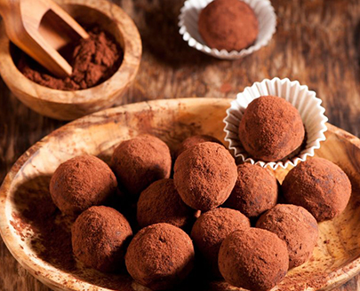

Всі інгредієнти перебити в блендері, сформовати в кульки та обакатати в какао. Прибрати в ходлодильник на 20 хв.
- фініки(250 г.)
- родзинки (100 г.)
- горіхи
- какао
Всі інгредієнти перебити в блендері, сформовати в кульки та обакатати в какао. Прибрати в ходлодильник на 20 хв.